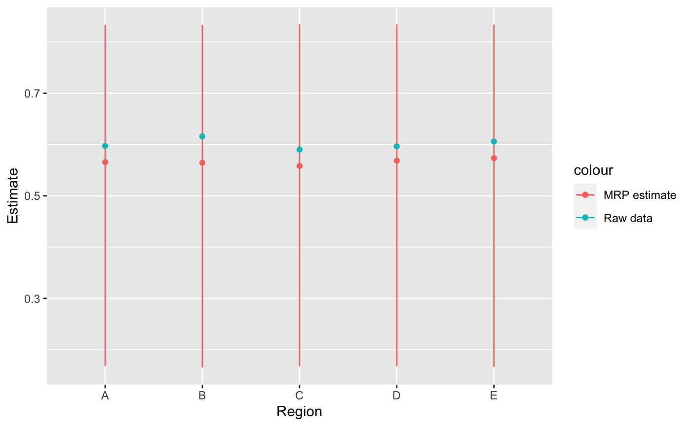

getting-started.Rmdlibrary(tidyverse) #> ── Attaching packages ──────────────────────────────────────────────────────────────────────────────────────────── tidyverse 1.3.0 ── #> ✓ ggplot2 3.3.2 ✓ purrr 0.3.4 #> ✓ tibble 3.0.3 ✓ dplyr 1.0.2 #> ✓ tidyr 1.1.1 ✓ stringr 1.4.0 #> ✓ readr 1.3.1 ✓ forcats 0.5.0 #> ── Conflicts ─────────────────────────────────────────────────────────────────────────────────────────────── tidyverse_conflicts() ── #> x dplyr::filter() masks stats::filter() #> x dplyr::lag() masks stats::lag() library(tidymrp)
MRP needs two datasets: 1. A survey 1. A poststratification frame
A poststratification frame splits the population we are interested in into discrete groups. Formally this is called a partition: each person in the population belongs to exactly one group. These groups are called stratas. Hence poststratification: a splitting of the population into stratas and post because it is done after the sample is collected. (This is opposed to stratified sampling, a type of probabilistic sampling.)
There are a few ways to get a poststratification frame. We can either get a pre-prepared one or make one. To make one we need a census. (For more details, see the vignette creating a poststratification frame).
poststratification_frame <- example_census %>% create_poststratification_frame(strata_variables = c(region, age_group), weight_column = population_total)
So now we know how many people are in each strata. But what do those people do?
We want to build a model that can predict the response of any person. This is where the survey comes in useful. We can create a model to predict their response based on the socio-demographic information included in the poststratification frame. (This is often a limiting factor, though there are ways around it. To explore alternatives, look at the vignette on advanced poststratification.) We chose a poststratification frame that includes region and age, so our model should be based on that.
Model fitting is not a copy and paste job. For an overview, see [multilevel_regression_guide] and for a more in-depth discussion, read Statistical Rethinking or Bayesian Data Analysis.
Let’s look at our survey.
example_survey #> # A tibble: 17,000 x 6 #> region age ethnicity gender non_negative_response binary_response #> <chr> <int> <int> <fct> <dbl> <dbl> #> 1 C 19 3 female 0.00571 0 #> 2 A 34 5 female 0.0723 0 #> 3 C 18 3 female 0.0106 0 #> 4 B 54 2 female 1.38 1 #> 5 B 52 3 female 1.03 1 #> 6 D 41 5 female 0.786 0 #> 7 A 34 2 male 0.0489 1 #> 8 A 78 3 male 0.0444 1 #> 9 C 54 3 female 0.892 1 #> 10 D 39 2 female 0.392 0 #> # … with 16,990 more rows
Note first that the survey and poststratification classifications do not neatly overlap. In the census, we have ‘age_group’ and in the survey we have a finer variable of ‘age’. We need to make the survey look like the census.
example_survey <- example_survey %>% mutate(age_group = case_when( age %in% 16:24 ~ "16_to_24", age %in% 25:34 ~ "25_to_34", age %in% 35:44 ~ "35_to_44", age %in% 45:54 ~ "45_to_54", age %in% 55:64 ~ "55_to_64", age >= 65 ~ "65_plus") )
There are two responses we can model. We will model the binary response because it is simpler. The binary response is either 0 or 1. If we assume that each strata has a probability of answering 0 or 1, the best likelihood we can use is a binomial distribution. (Technically, it is the maximum entropy distribution i.e. it doesn’t know any more than we do.)
tidymrp can be used with various model packages. Let’s use brms.
library(brms) #> Loading required package: Rcpp #> Loading 'brms' package (version 2.13.5). Useful instructions #> can be found by typing help('brms'). A more detailed introduction #> to the package is available through vignette('brms_overview'). #> #> Attaching package: 'brms' #> The following object is masked from 'package:stats': #> #> ar options(mc.cores = parallel::detectCores()) binary_model_1 <- brms::brm(binary_response ~ 1 + (1 | region) + (1 | age_group), family = bernoulli(), data = example_survey, chains = parallel::detectCores(), iter = 200, # 200 is normally enough to get the idea file = here::here("models/binary_model_1") )
Now we have a model that predicts the response based on age and region. We also have a poststratification frame that tells us how many people are in each age and region strata. We can get the estimates for each section we are interested in now.
add_proportion(poststratification_frame, model_variables = c(age_group, region), estimates_by = region) #> Joining, by = "region" #> # A tibble: 30 x 4 #> # Groups: age_group, region [30] #> age_group region population_total strata_proportion #> <chr> <chr> <int> <dbl> #> 1 16_to_24 A 33234 0.166 #> 2 16_to_24 B 33176 0.166 #> 3 16_to_24 C 33103 0.166 #> 4 16_to_24 D 33185 0.165 #> 5 16_to_24 E 33202 0.166 #> 6 25_to_34 A 33237 0.166 #> 7 25_to_34 B 33360 0.167 #> 8 25_to_34 C 33489 0.167 #> 9 25_to_34 D 33298 0.166 #> 10 25_to_34 E 33454 0.167 #> # … with 20 more rows
poststratified_estimates <- get_poststratified_estimates(model = binary_model_1, new_data = poststratification_frame, model_variables = c(age_group, region), estimates_by = region) #> Joining, by = "region" poststratified_estimates #> # A tibble: 5 x 4 #> region mean_estimate lower_estimate upper_estimate #> <chr> <dbl> <dbl> <dbl> #> 1 A 0.566 0.168 0.834 #> 2 B 0.564 0.165 0.834 #> 3 C 0.558 0.167 0.834 #> 4 D 0.568 0.167 0.835 #> 5 E 0.573 0.166 0.834
poststratified_estimates %>% ggplot(aes(y = mean_estimate, x = forcats::fct_inorder(region), color = "MRP estimate")) + geom_point() + geom_errorbar(aes(ymin = lower_estimate, ymax = upper_estimate), width = 0) + geom_point(data = example_survey %>% group_by(region, binary_response) %>% summarise(n = n()) %>% group_by(region) %>% mutate(prop = n/sum(n)) %>% filter(binary_response==1), aes(region, prop, color = "Raw data")) + ggplot2::labs(x = "Region", y = "Estimate") #> `summarise()` regrouping output by 'region' (override with `.groups` argument)
